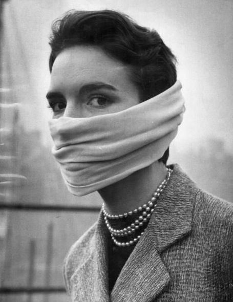
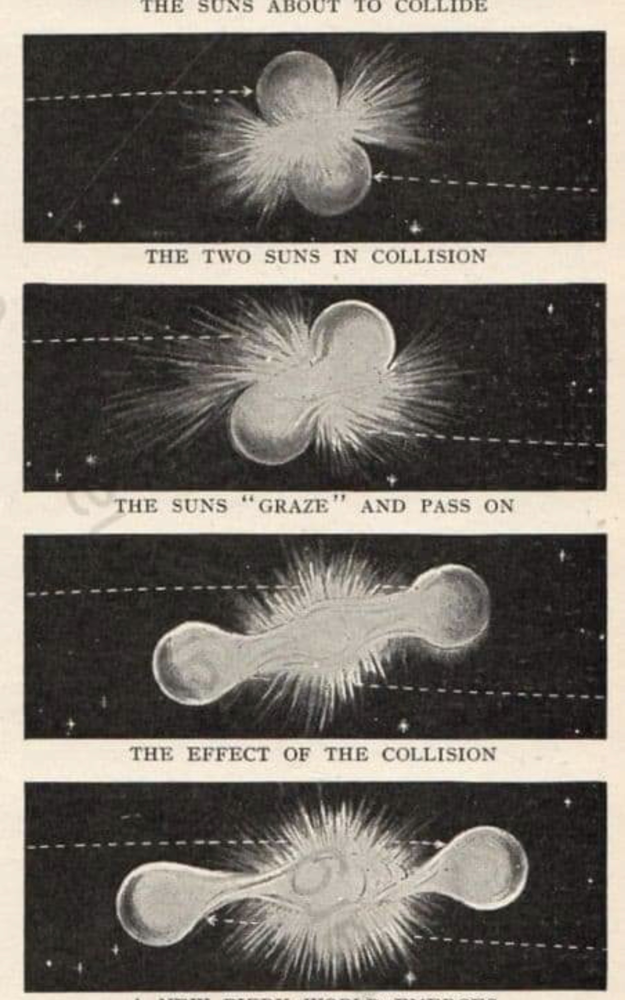
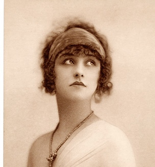

How I ponder these dreams I had It was our taming Our own Carpophorus Get back up regain your substance This sigil on your chest it means nothing anyway Sits well with golden platters you’re killing me The severance of all those tiny beings You’re like nothing I’ve seen before Like the angels you cause me panic but bring me peace Like the silver winds and the spectral honors See them holding hands and chanting our blessings I spectate the rotting Kodak The sides how they’ve burnt from the fire I never seen as much peace in one night as that I have that one We should turn back there are soldiers there
I admit that every night I opt to see by candlelight In this room where the Dodechild cries I too have been left behind I wish I could explain why Your words have always made me high First made contact with thine eyes Shot with Cupid’s arrows till I died While picking flowers in my Acacia gardens grown in my mind I wish I could find why Jumped off the nest but cannot fly Veniste Vidisti Vicisti, help me Am I, the machine, the kino eye Paranoid or looking through my own lies All the stars watching in the sky Could not remind me of why So I’ll have to hold my head up high I’ll have to swallow your words dry
Wash your hair with fruit gushers Goddamn these racing stripes I wear on my chest I stare at the blue wall And see the happy people They’re all such happy people At least when they aren’t being fakes I don’t miss being one of those fakes Pierced by my truth Am I trying to hide from something And if I do will it still find me Then I’ll show myself with joy Oh please eradicate me Before you really think you’re sure tell me Who the fuck was Jesus’ savior? Make me regret being empty Because it only hits harder when I stare at the blank white wall And think of all the sweet little hearts I tore apart I took those sweet hearts and tore them apart Before I put a bullet through my skull It stuffed some self realization in that bloody hole But it this really cathartic?
All around the world Darkness runs away from you You'd never raise your hand against a child All along the way Darkness tries to run away from you You'll never hurt a starving child I just count the days I wish I had the nerves If I fall asleep I'll just lose my chance I'll sleep away my days I'll sleep away the years I can't stop it now The life is seeping out of me A whole new world is opened right in front of me But everything feels right I won't want to ruin it I just feel it's best to hold it back I just count the days Ill never have the nerves I'll just fall asleep So I can lose my chance I'll sleep away my days Maybe that's how it should be

No tiene preguntas Como tu brillar Tu siempre baila Mi solo camino No llores, mi angela Todo es bueno el bordo Todo siento tu mano y alma Demasiado cosas(Nosotros ventana) Muerto de estrellas(Es muy dolorosa) No puedo recuerdo(no lo creo) Ver todo color de rosa Creo tu aura Golpes donde duele Yo quiero tu ojos Ser mi guía para la paz Yo ver una fantasma Abajo la mesa Y no despertará